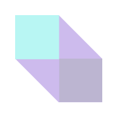

If you’re a Chroma user you’ll be excited to hear that there will be some changes to the user interface you’ll start seeing soon. This is just a design change not a spatial change so it won't impact your product. Our UI has been designed for a fresher, cleaner, sleeker and more sophisticated look and as a result it should help improve the visual design of the page, usability and enhance the customer experience. A brand can still be applied to our Purple UI components Library, for that reason our UI Library is not too opinionated.
Balance, proximity, alignment, emphasis, repetition, movement, contrast and space are all important and things that need to be considered when designing UI.
For this phase we haven't changed the spacing, alignment and behaviour, we've introduced 2 new concepts: rounded corners and hint of drop shadows.
This is purely a CSS change and no code change. The UI behaves exactly the same, as users don’t want surprises or changes in familiar behaviour/patterns.
_________
The Why:
We have conducted an internal survey to validate
some of our assumptions. While most said our UI is
functional and it works, result shows that our current
UI Library doesn't feel inspiring, contemporary and
flexible enough.
Upon reviewing our library, we found our current UI
to be quite flat, making it difficult for the eye to
distinguish what it should focus on first, and lacked a
sense of hierarchy.
As a result, The Chroma design team were
determined to improve the UI to make it more
sophisticated while using Design Principles.
Our UI Design Principles are our compass in the creation of our practices.
Design accessible interfaces.
When we design products it’s important to remember
that: good UI is accessible UI because it improves
product’s usability across all groups of users.
Our new UI Library has been refined for:
Use well-established conventions because users are
familiar with them.
'The best user interfaces allow the content to shine and guide people'
Use Emphasis to increase discoverability and set up the focal point in the design. This makes sure
the right element is always highlighted.

Create recognisable, inviting and easy on the eyes UI component library
Both iOS and Material Design elements are rounded, it is widely used in DS and it is more seen as a standard now.
Humans are inspired from nature and we align easily to rounded ones.
We now use a 4px corner radius to
create a sense of simplicity, optimism, and
openness which is lined with the IAG values such as 'safer'.(see below)
The Purple is at the heart of the Chroma brand as we belong to the IAG family. Purple runs through everything we do and our principles.